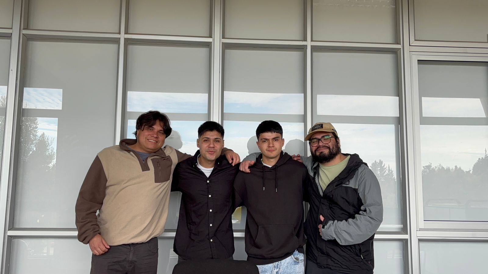
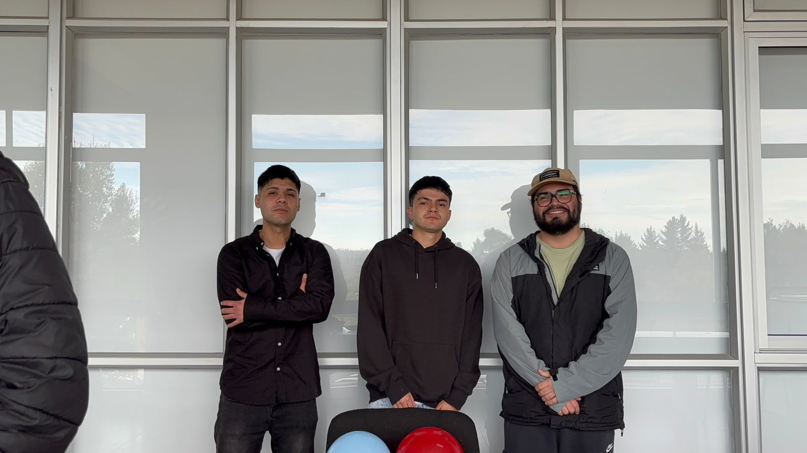
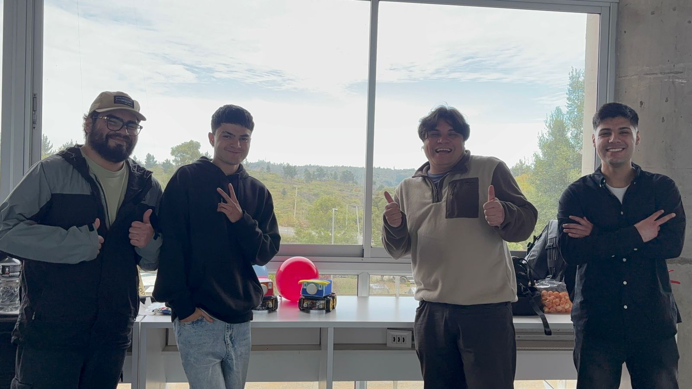
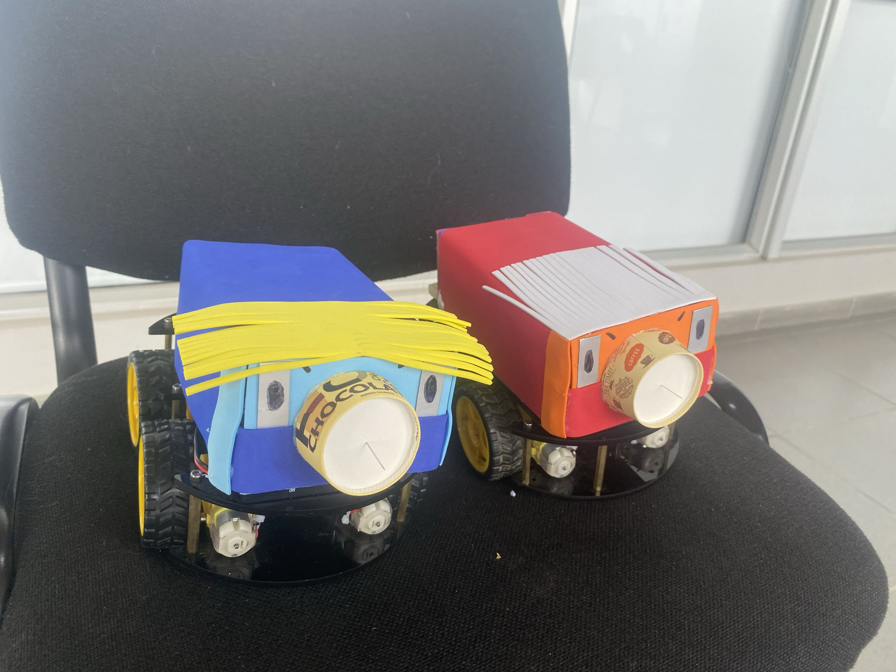
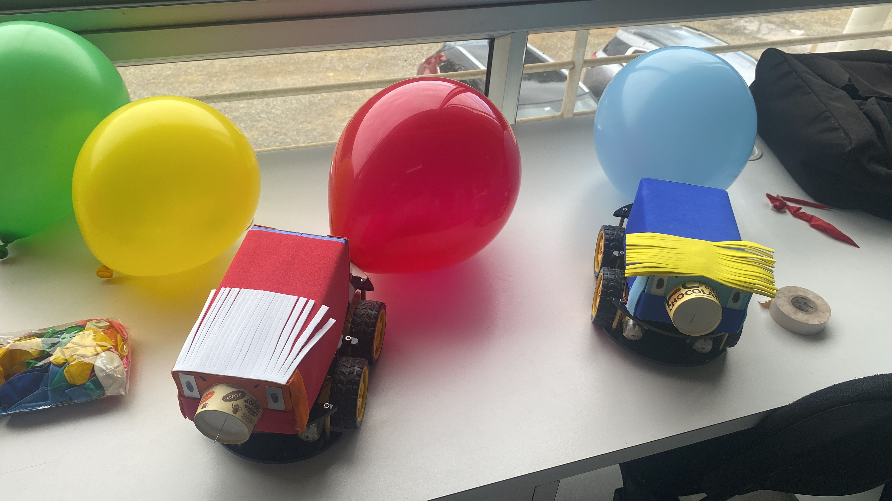
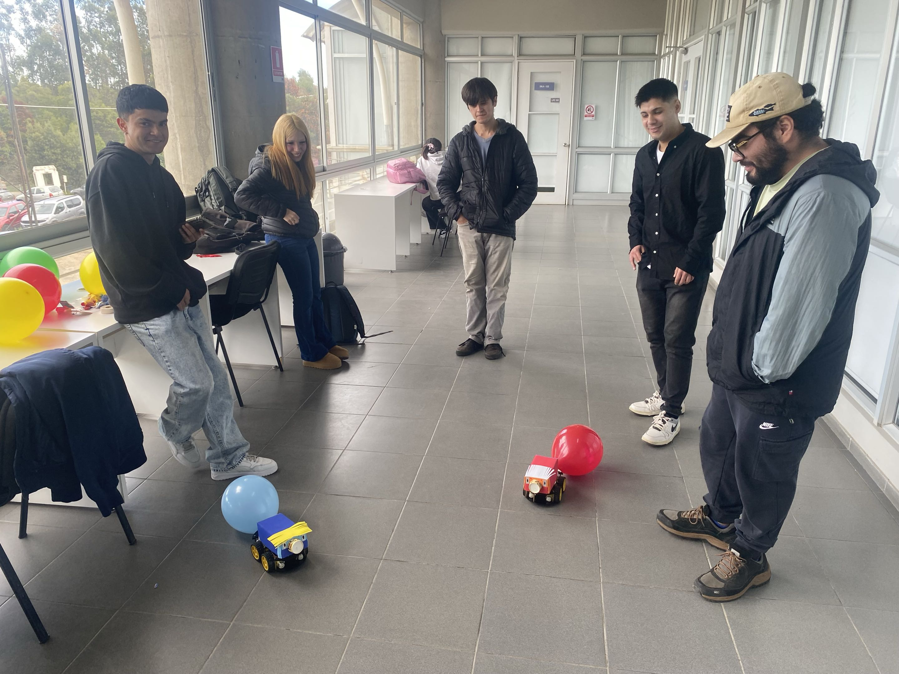

Proyecto 3: Robot de Batalla
Este informe documenta el desarrollo de un robot móvil controlado de forma inalámbrica, construido como parte del curso de robótica. El robot consiste en un vehículo de dos motores controlado mediante un microcontrolador ESP32, programado en el lenguaje Elixir sobre la máquina virtual AtomVM.
El robot se controla a distancia desde un teléfono celular a través de una red WiFi, sin necesidad de instalar ninguna aplicación: el propio robot genera una página web con botones de dirección a la que se accede desde el navegador.
El proyecto se planteó como una competencia entre dos robots idénticos. Cada robot lleva montada una aguja en su parte frontal y un globo adherido en su parte trasera; el objetivo del enfrentamiento es maniobrar para reventar el globo del robot contrario mientras se protege el propio.
Lista de Componentes
A continuación se detallan los componentes utilizados en la construcción de un robot. Ambas unidades construidas son idénticas.
| Componente | Descripción | Cantidad |
|---|---|---|
Microcontrolador ESP32 |
Placa de desarrollo con WiFi integrado. Funciona como el "cerebro" del robot: ejecuta el programa, se conecta a la red y controla los motores. |
1 |
Driver de motores L298N |
Puente H que recibe las señales de control del ESP32 y entrega la corriente necesaria para alimentar los motores. El ESP32 no puede mover los motores directamente, por lo que este componente actúa como intermediario. |
1 |
Motores DC con reductora |
Dos motores de corriente continua, uno por cada lado del chasis, que impulsan las ruedas del robot. |
2 |
Ruedas |
Acopladas a los motores para el desplazamiento del robot. |
2 |
Chasis |
Estructura física donde se montan todos los componentes. |
1 |
Batería / fuente de alimentación |
Provee energía a los motores y a la electrónica del robot. |
1 |
Aguja |
Montada en la parte frontal del robot, utilizada para reventar el globo del robot contrario durante el enfrentamiento. |
1 |
Globo |
Adherido en la parte trasera del robot. Constituye el objetivo a proteger durante el enfrentamiento. |
1 |
Cables de conexión (jumpers) |
Para realizar las conexiones entre el ESP32, el driver y los motores. |
Varios |
Diagrama de Cableado
El siguiente esquema describe las conexiones eléctricas entre el ESP32, el driver de motores L298N y los motores DC.
Conexiones ESP32 → Driver L298N
| Pin ESP32 | Pin L298N | Función |
|---|---|---|
GPIO 13 |
IN1 |
Control del motor izquierdo (sentido A) |
GPIO 14 |
IN2 |
Control del motor izquierdo (sentido B) |
GPIO 27 |
IN3 |
Control del motor derecho (sentido A) |
GPIO 26 |
IN4 |
Control del motor derecho (sentido B) |
GND |
GND |
Tierra común entre ambas placas |
Conexiones de alimentación y motores
| Conexión | Descripción |
|---|---|
Batería (+) → L298N (12V / VCC) |
Alimentación de potencia para los motores. |
Batería (−) → L298N (GND) |
Tierra de la alimentación. |
L298N (OUT1, OUT2) → Motor izquierdo |
Salida de potencia hacia el motor del lado izquierdo. |
L298N (OUT3, OUT4) → Motor derecho |
Salida de potencia hacia el motor del lado derecho. |
Los pines GPIO 13, 14, 27 y 26 del ESP32 están definidos directamente en
el código como @in1, @in2, @in3 e @in4. Cada par de pines controla el
sentido de giro de un motor: una combinación hace girar la rueda hacia adelante
y la inversa hacia atrás.
|
Código Utilizado
El robot fue programado en lenguaje Elixir, ejecutándose sobre la máquina virtual AtomVM, que permite correr código Elixir/Erlang en microcontroladores como el ESP32.
A continuación se presentan los fragmentos más relevantes del programa. El código fuente completo se encuentra disponible en el repositorio del proyecto (ver sección Repositorio del Proyecto).
Definición de pines y configuración
Al inicio del módulo se definen los pines GPIO conectados al driver de motores y los parámetros de la red WiFi a la que el robot se conecta.
@in1 13
@in2 14
@in3 27
@in4 26
@wifi_ssid "mauricio"
@wifi_psk "mauricapo123"
@listen_port 80Control de los motores
Cada función de movimiento activa los pines en una combinación específica.
El sentido de giro de cada motor depende de qué pin esté en alto (:high)
y cuál en bajo (:low).
def forward do
:gpio.digital_write(@in1, :high); :gpio.digital_write(@in2, :low)
:gpio.digital_write(@in3, :high); :gpio.digital_write(@in4, :low)
end
def left do
:gpio.digital_write(@in1, :low); :gpio.digital_write(@in2, :high)
:gpio.digital_write(@in3, :high); :gpio.digital_write(@in4, :low)
end
def stop do
:gpio.digital_write(@in1, :low); :gpio.digital_write(@in2, :low)
:gpio.digital_write(@in3, :low); :gpio.digital_write(@in4, :low)
endPara avanzar, ambos motores giran en el mismo sentido. Para girar, los motores giran en sentidos opuestos, lo que hace rotar el robot sobre su propio eje. Para detenerse, todos los pines se ponen en bajo.
Recepción de comandos por WiFi
El robot levanta un servidor web que interpreta las órdenes recibidas desde el navegador del celular. Según el comando recibido en la URL, ejecuta el movimiento correspondiente.
defp handle_command_request(socket, request_line) do
motion =
cond do
contains_bin?(request_line, "move=forward") -> "forward"
contains_bin?(request_line, "move=backward") -> "backward"
contains_bin?(request_line, "move=left") -> "left"
contains_bin?(request_line, "move=right") -> "right"
contains_bin?(request_line, "move=stop") -> "stop"
true -> nil
end
case motion do
"forward" -> forward(); send_json(socket, motion)
"left" -> left(); send_json(socket, motion)
"stop" -> stop(); send_json(socket, motion)
nil -> send_bad_request(socket, "invalid_move")
end
endPosibles Usos de esta Tecnología
Si bien este proyecto fue desarrollado con fines académicos y recreativos, la tecnología empleada —un microcontrolador con conectividad WiFi capaz de controlar motores de forma remota— tiene múltiples aplicaciones prácticas en el mundo real:
-
Robótica educativa: plataforma de bajo costo para enseñar conceptos de programación, electrónica y control de motores en colegios y universidades.
-
Vehículos de exploración: robots que acceden a lugares peligrosos o de difícil acceso, como tuberías, zonas con riesgo de derrumbe o ambientes contaminados.
-
Domótica y automatización del hogar: el mismo principio de controlar dispositivos por WiFi desde el celular puede aplicarse a cortinas, puertas, luces o sistemas de riego automático.
-
Agricultura de precisión: pequeños robots que recorren cultivos para monitorear plantas, medir humedad del suelo o detectar plagas.
-
Vigilancia y monitoreo: añadiendo una cámara, el robot podría recorrer un espacio y transmitir video en tiempo real para tareas de seguridad.
-
Logística en interiores: transporte automatizado de pequeños objetos dentro de bodegas, oficinas o laboratorios.
-
Prototipado de productos IoT: la combinación ESP32 + control remoto es una base habitual para el desarrollo de productos del Internet de las Cosas.
Repositorio del Proyecto
El código fuente completo del robot, junto con la documentación y los archivos del proyecto, se encuentra disponible en el siguiente repositorio de GitHub:
El repositorio incluye:
-
El código fuente completo en Elixir (
auto1.exyauto2.ex). -
El archivo de configuración del proyecto (
mix.exs). -
Las dependencias necesarias para compilar y cargar el programa en el ESP32.
-
Instrucciones de instalación y uso.
Lista de Costos
Los siguientes valores corresponden al costo total de los materiales utilizados para construir los dos robots del proyecto.
| Ítem | Cantidad | Precio unitario | Subtotal |
|---|---|---|---|
Microcontrolador ESP32 |
2 |
$7.490 CLP |
$14.980 CLP |
Driver de motores L298N |
2 |
$3.250 CLP |
$6.500 CLP |
Bolsa de globos (látex, ~50 un.) |
1 |
~$1.500 CLP |
~$1.500 CLP |
Agujas |
2 |
~$300 CLP |
~$600 CLP |
Pliego de goma eva (40×60 cm) |
2 |
~$750 CLP |
~$1.500 CLP |
Pliego de cartulina |
2 |
~$390 CLP |
~$780 CLP |
Costo total del proyecto |
~$25.860 CLP |
Galería Fotográfica
En esta sección se presenta evidencia visual del robot construido y del equipo de trabajo al término del proyecto.





